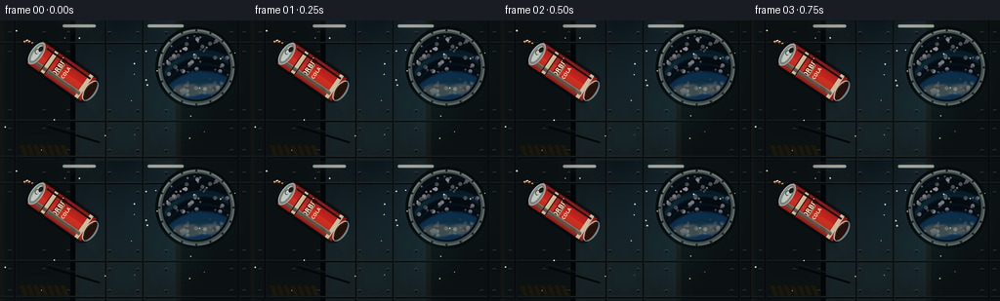
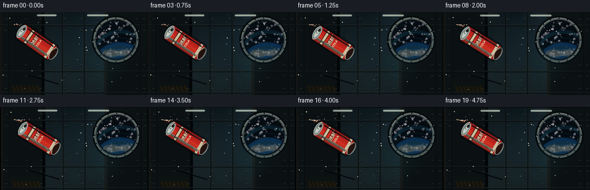
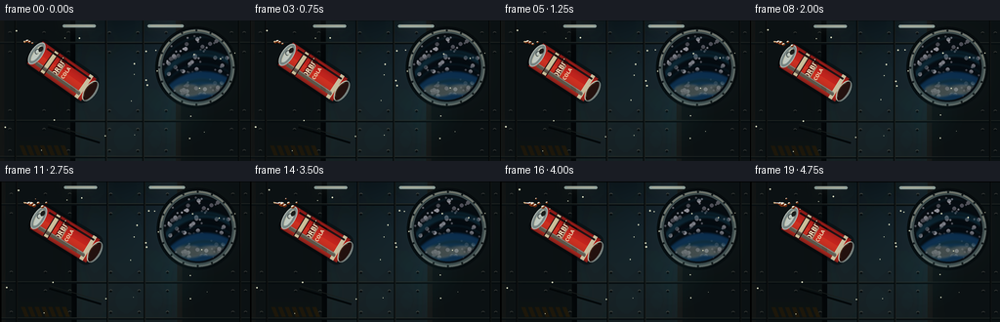
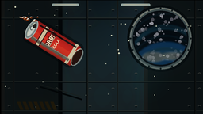

CODING AGENTS AS PIXEL WORLD MODELS
traex/DeepSeek-V4.1-Flash · phygen_005
点击播放 · 原生 RGB 像素
逐轮保存的候选
回放视频、检查图与代码变化。
每份候选均可单独播放。实际图片检查记录在下方工具轨迹中。
候选 01播放与检查图
点击播放 · 原生 RGB 像素


展开代码变化
--- 上一保存版本
+++ 本次保存版本
@@ -0,0 +1,434 @@
+from pathlib import Path
+import math
+
+import numpy as np
+from PIL import Image, ImageDraw, ImageFilter, ImageFont
+
+from artifact_io import save
+
+
+CASE_DIR = Path(__file__).resolve().parent
+W, H, N, FPS = 256, 144, 20, 4.0
+SS = 4
+RW, RH = W * SS, H * SS
+
+
+def font(size):
+ for path in (
+ "/usr/share/fonts/truetype/dejavu/DejaVuSansCondensed-Bold.ttf",
+ "/usr/share/fonts/truetype/dejavu/DejaVuSans-Bold.ttf",
+ ):
+ if Path(path).is_file():
+ return ImageFont.truetype(path, size)
+ return ImageFont.load_default()
+
+
+def lerp(a, b, t):
+ return a + (b - a) * t
+
+
+def clamp(x, lo=0.0, hi=1.0):
+ return np.clip(x, lo, hi)
+
+
+def smoothstep(e0, e1, x):
+ q = clamp((x - e0) / max(e1 - e0, 1e-6))
+ return q * q * (3.0 - 2.0 * q)
+
+
+def rgba_array(image):
+ return np.asarray(image, dtype=np.float32) / 255.0
+
+
+def paste_rotated(dst, source, center, angle):
+ """Paste a transparent RGBA sprite, rotating about its center."""
+ rotated = source.rotate(angle, resample=Image.Resampling.BICUBIC, expand=False)
+ x = round(center[0] * SS - rotated.width / 2)
+ y = round(center[1] * SS - rotated.height / 2)
+ dst.alpha_composite(rotated, (x, y))
+
+
+def make_background():
+ y, x = np.mgrid[0:RH, 0:RW].astype(np.float32)
+ u, v = x / RW, y / RH
+
+ top = np.array([13, 25, 31], dtype=np.float32)
+ bottom = np.array([27, 42, 46], dtype=np.float32)
+ base = top + (bottom - top) * v[..., None]
+ side_light = np.exp(-((u - 0.03) / 0.24) ** 2) * 18
+ base += side_light[..., None] * np.array([0.9, 0.72, 0.48])
+ cool_glow = np.exp(-((u - 0.84) / 0.26) ** 2) * np.exp(-((v - 0.20) / 0.42) ** 2)
+ base += cool_glow[..., None] * np.array([9, 19, 25])
+ vignette = 1.0 - 0.38 * (((u - 0.5) / 0.72) ** 2 + ((v - 0.48) / 0.70) ** 2)
+ base *= clamp(vignette, 0.48, 1.0)[..., None]
+ image = Image.fromarray(np.uint8(clamp(base / 255.0) * 255), "RGB").convert("RGBA")
+ draw = ImageDraw.Draw(image, "RGBA")
+
+ # Broad interior ribs give the tiny frame an unmistakable station scale.
+ for cx, width in ((38, 78), (226, 92)):
+ x0 = cx * SS
+ draw.rectangle((x0 - width * SS // 2, 0, x0 + width * SS // 2, RH), fill=(31, 48, 52, 92))
+ draw.rectangle((x0 - width * SS // 2, 0, x0 - width * SS // 2 + 5 * SS, RH), fill=(118, 132, 127, 38))
+ draw.rectangle((x0 + width * SS // 2 - 5 * SS, 0, x0 + width * SS // 2, RH), fill=(3, 11, 15, 100))
+
+ for yy in (22, 102, 139):
+ draw.rectangle((0, yy * SS, RW, yy * SS + 2 * SS), fill=(7, 17, 21, 155))
+ draw.line((0, yy * SS, RW, yy * SS), fill=(120, 143, 137, 58), width=SS)
+ for xx in (15, 108, 146, 244):
+ draw.line((xx * SS, 0, xx * SS, RH), fill=(5, 14, 17, 105), width=SS)
+ draw.line(((xx + 1) * SS, 0, (xx + 1) * SS, RH), fill=(125, 142, 136, 31), width=SS)
+
+ # Rivets and small service labels.
+ for xx in (10, 45, 70, 112, 141, 170, 237, 250):
+ for yy in (13, 33, 93, 112, 134):
+ px, py = xx * SS, yy * SS
+ draw.ellipse((px - SS, py - SS, px + SS, py + SS), fill=(5, 13, 16, 170))
+ draw.arc((px - 2 * SS, py - 2 * SS, px + 2 * SS, py + 2 * SS), 205, 335, fill=(151, 160, 151, 92), width=SS)
+
+ # Panel seams and warning stripes on the lower left.
+ draw.line((49 * SS, 106 * SS, 103 * SS, 122 * SS), fill=(104, 127, 120, 45), width=SS)
+ draw.line((49 * SS, 109 * SS, 102 * SS, 125 * SS), fill=(3, 10, 13, 110), width=2 * SS)
+ for k in range(7):
+ x0 = (20 + k * 7) * SS
+ draw.polygon(((x0, 128 * SS), (x0 + 4 * SS, 128 * SS), (x0 + 8 * SS, 138 * SS), (x0 + 4 * SS, 138 * SS)),
+ fill=(170, 135, 52, 42))
+
+ # Ceiling luminaires.
+ for x0, x1 in ((64, 98), (151, 188)):
+ glow = Image.new("RGBA", image.size, (0, 0, 0, 0))
+ gd = ImageDraw.Draw(glow, "RGBA")
+ gd.rounded_rectangle((x0 * SS, 4 * SS, x1 * SS, 7 * SS), radius=2 * SS, fill=(207, 229, 217, 190))
+ glow = glow.filter(ImageFilter.GaussianBlur(6 * SS))
+ image.alpha_composite(glow)
+ draw.rounded_rectangle((x0 * SS, 4 * SS, x1 * SS, 7 * SS), radius=2 * SS, fill=(204, 228, 218, 205))
+ draw.line((x0 * SS + 3 * SS, 5 * SS, x1 * SS - 3 * SS, 5 * SS), fill=(255, 250, 218, 190), width=SS)
+
+ # Window shadow and metal rim.
+ cx, cy, radius = 201 * SS, 48 * SS, 35 * SS
+ draw.ellipse((cx - radius - 7 * SS, cy - radius - 7 * SS, cx + radius + 7 * SS, cy + radius + 7 * SS),
+ fill=(3, 10, 13, 185))
+ draw.ellipse((cx - radius - 4 * SS, cy - radius - 4 * SS, cx + radius + 4 * SS, cy + radius + 4 * SS),
+ fill=(68, 84, 84, 255))
+ draw.ellipse((cx - radius, cy - radius, cx + radius, cy + radius), fill=(1, 7, 12, 255))
+
+ # Stars in the viewport.
+ rng = np.random.default_rng(22)
+ for _ in range(90):
+ theta = rng.uniform(0, 2 * math.pi)
+ rr = radius * math.sqrt(rng.uniform(0, 0.94))
+ px, py = cx + math.cos(theta) * rr, cy + math.sin(theta) * rr
+ s = rng.integers(1, 3) * SS
+ bright = int(rng.integers(105, 235))
+ draw.ellipse((px - s, py - s, px + s, py + s), fill=(bright, bright, min(255, bright + 12), 190))
+
+ # Earth limb and illuminated cloud bands.
+ earth = Image.new("RGBA", image.size, (0, 0, 0, 0))
+ ed = ImageDraw.Draw(earth, "RGBA")
+ ex, ey, er = cx + 7 * SS, cy + 55 * SS, 52 * SS
+ ed.ellipse((ex - er, ey - er, ex + er, ey + er), fill=(8, 46, 82, 255))
+ for j, yy in enumerate(range(-35, 50, 10)):
+ wobble = 4 * math.sin(j * 1.9)
+ ed.arc((ex - er + 2 * SS, ey - er + (yy + wobble) * SS, ex + er - 2 * SS, ey + er + (yy + wobble) * SS),
+ 190, 343, fill=(29, 102, 137, 125), width=(2 + j % 3) * SS)
+ for j in range(16):
+ a = rng.uniform(0, 2 * math.pi)
+ rr = rng.uniform(0.15, 0.92) * er
+ px, py = ex + math.cos(a) * rr, ey + math.sin(a) * rr * 0.8
+ ew, eh = rng.uniform(8, 25) * SS, rng.uniform(2, 6) * SS
+ ed.ellipse((px - ew, py - eh, px + ew, py + eh), fill=(214, 229, 219, int(rng.uniform(65, 140))))
+ earth = earth.filter(ImageFilter.GaussianBlur(1.2 * SS))
+ viewport = Image.new("L", image.size, 0)
+ ImageDraw.Draw(viewport).ellipse((cx - radius + 2 * SS, cy - radius + 2 * SS, cx + radius - 2 * SS, cy + radius - 2 * SS),
+ fill=255)
+ image.paste(earth, (0, 0), Image.composite(viewport, Image.new("L", image.size, 0), earth.getchannel("A")))
+
+ # Window rim highlight, bolts and inner lip.
+ draw.ellipse((cx - radius - 4 * SS, cy - radius - 4 * SS, cx + radius + 4 * SS, cy + radius + 4 * SS),
+ outline=(143, 158, 153, 190), width=2 * SS)
+ draw.arc((cx - radius - 3 * SS, cy - radius - 3 * SS, cx + radius + 3 * SS, cy + radius + 3 * SS),
+ 192, 348, fill=(219, 222, 196, 165), width=SS)
+ for k in range(16):
+ a = k / 16 * 2 * math.pi
+ px = cx + math.cos(a) * (radius + 3 * SS)
+ py = cy + math.sin(a) * (radius + 3 * SS)
+ draw.ellipse((px - SS, py - SS, px + SS, py + SS), fill=(18, 26, 28, 210))
+
+ # Very soft internal bloom from the window and ceiling lamps.
+ blur = image.filter(ImageFilter.GaussianBlur(9 * SS))
+ image = Image.blend(image, blur, 0.16)
+ return image
+
+
+BACKGROUND = make_background()
+
+
+def make_can(angle_deg):
+ """Return a detailed soda-can sprite in local upright coordinates."""
+ pad = 24 * SS
+ cw, ch = 42 * SS, 94 * SS
+ im = Image.new("RGBA", (cw + 2 * pad, ch + 2 * pad), (0, 0, 0, 0))
+ d = ImageDraw.Draw(im, "RGBA")
+ ox, oy = pad + 7 * SS, pad + 7 * SS
+ body_x0, body_x1 = ox, ox + 28 * SS
+ body_y0, body_y1 = oy + 8 * SS, oy + 75 * SS
+
+ # Shadow silhouette is kept a little wider to read against the dark wall.
+ d.rounded_rectangle((body_x0 - 3 * SS, body_y0 - 4 * SS, body_x1 + 3 * SS, body_y1 + 5 * SS),
+ radius=8 * SS, fill=(0, 5, 7, 115))
+
+ # Cylindrical body shading in narrow vertical strips.
+ for i in range(28 * SS):
+ q = i / (28 * SS - 1)
+ rim = abs(q - 0.5) * 2
+ shade = 0.28 + 0.72 * math.sqrt(max(0.0, 1.0 - rim ** 1.5))
+ stripe = q > 0.54
+ if stripe:
+ color = np.array((198, 37, 30)) * shade + np.array((74, 15, 16)) * (1 - shade)
+ else:
+ color = np.array((205, 49, 34)) * shade + np.array((72, 17, 19)) * (1 - shade)
+ d.line((body_x0 + i, body_y0, body_x0 + i, body_y1),
+ fill=(*np.uint8(clamp(color / 255) * 255), 255))
+
+ # Metallic silver top and bottom.
+ top = np.array((159, 171, 169), dtype=np.float32)
+ bottom = np.array((111, 122, 120), dtype=np.float32)
+ d.ellipse((body_x0 + SS, body_y0 - 4 * SS, body_x1 - SS, body_y0 + 8 * SS), fill=(174, 183, 177, 255))
+ d.ellipse((body_x0 + 2 * SS, body_y0 - 3 * SS, body_x1 - 2 * SS, body_y0 + 7 * SS), fill=(119, 133, 131, 255))
+ d.ellipse((body_x0 + 5 * SS, body_y0 - SS, body_x1 - 5 * SS, body_y0 + 5 * SS), fill=(192, 201, 193, 255))
+ d.arc((body_x0 + 4 * SS, body_y0 - SS, body_x1 - 4 * SS, body_y0 + 6 * SS), 195, 342,
+ fill=(237, 236, 210, 210), width=SS)
+
+ # Pull tab, with a dark opening at the pouring lip.
+ d.ellipse((ox + 13 * SS, body_y0 - SS, ox + 19 * SS, body_y0 + 4 * SS), outline=(78, 88, 88, 255), width=SS)
+ d.arc((ox + 12 * SS, body_y0, ox + 20 * SS, body_y0 + 4 * SS), 10, 165, fill=(220, 222, 201, 220), width=SS)
+ d.ellipse((ox + 17 * SS, body_y0 + SS, ox + 23 * SS, body_y0 + 5 * SS), fill=(29, 29, 27, 255))
+
+ # Label bands and tiny print.
+ d.rectangle((body_x0, body_y0 + 16 * SS, body_x1, body_y0 + 20 * SS), fill=(228, 213, 171, 225))
+ d.rectangle((body_x0, body_y1 - 8 * SS, body_x1, body_y1 - 4 * SS), fill=(229, 215, 176, 220))
+ d.text((ox + 5 * SS, body_y0 + 25 * SS), "ORBIT", font=font(7 * SS), fill=(247, 232, 194, 255),
+ stroke_width=SS, stroke_fill=(97, 18, 17, 220))
+ d.text((ox + 8 * SS, body_y0 + 35 * SS), "COLA", font=font(5 * SS), fill=(244, 230, 191, 245))
+ d.line((ox + 7 * SS, body_y0 + 32 * SS, ox + 21 * SS, body_y0 + 32 * SS), fill=(238, 222, 182, 185), width=SS)
+
+ # Cylindrical highlight and edge shadows.
+ d.line((body_x0 + 5 * SS, body_y0 + 7 * SS, body_x0 + 5 * SS, body_y1 - 5 * SS),
+ fill=(255, 222, 179, 85), width=3 * SS)
+ d.line((body_x0 + 7 * SS, body_y0 + 8 * SS, body_x0 + 7 * SS, body_y1 - 6 * SS),
+ fill=(255, 246, 220, 125), width=SS)
+ d.line((body_x1 - 4 * SS, body_y0 + 8 * SS, body_x1 - 4 * SS, body_y1 - 5 * SS),
+ fill=(47, 8, 11, 125), width=2 * SS)
+ d.rectangle((body_x0, body_y0 + 15 * SS, body_x1, body_y0 + 21 * SS), outline=(112, 18, 18, 100), width=SS)
+
+ # The visible elliptical lip that faces the liquid.
+ lip_box = (body_x0 + 2 * SS, body_y1 - 4 * SS, body_x1 - 2 * SS, body_y1 + 8 * SS)
+ d.ellipse(lip_box, fill=(120, 130, 126, 255))
+ d.ellipse((lip_box[0] + SS, lip_box[1] + 2 * SS, lip_box[2] - SS, lip_box[3] - 2 * SS),
+ fill=(35, 17, 14, 255))
+ d.arc(lip_box, 188, 351, fill=(229, 225, 195, 210), width=SS)
+ d.arc((lip_box[0] + 3 * SS, lip_box[1] + SS, lip_box[2] - 3 * SS, lip_box[3] - 2 * SS),
+ 200, 338, fill=(102, 51, 25, 170), width=SS)
+ return im
+
+
+CAN_SPRITE = make_can(0)
+
+
+def capsule_distance(x, y, p0, p1):
+ ax, ay = p0
+ bx, by = p1
+ dx, dy = bx - ax, by - ay
+ denom = dx * dx + dy * dy + 1e-6
+ q = clamp(((x - ax) * dx + (y - ay) * dy) / denom, 0.0, 1.0)
+ return np.sqrt((x - (ax + q * dx)) ** 2 + (y - (ay + q * dy)) ** 2)
+
+
+def liquid_field(t, x, y):
+ """Low-resolution signed field and color of the floating cola."""
+ # Main spill is a soft metaball cluster, not a hard drawn blob.
+ growth = smoothstep(0.02, 0.72, t)
+ main_cx = lerp(121, 132, smoothstep(0.0, 1.0, t))
+ main_cy = lerp(88, 95, smoothstep(0.0, 1.0, t)) + 1.3 * math.sin(t * 5.1)
+ parts = []
+ parts.append((x - main_cx) ** 2 / lerp(6.0, 11.5, growth) ** 2 +
+ (y - main_cy) ** 2 / lerp(5.0, 9.0, growth) ** 2)
+ parts.append((x - (main_cx + 12)) ** 2 / lerp(4.0, 8.5, growth) ** 2 +
+ (y - (main_cy + 5 + 1.5 * math.sin(t * 4))) ** 2 / lerp(3.5, 6.7, growth) ** 2)
+ parts.append((x - (main_cx - 9)) ** 2 / 7.0 ** 2 +
+ (y - (main_cy - 4)) ** 2 / 5.5 ** 2)
+ field = np.minimum.reduce(parts)
+
+ # Curved, tapered stream. Its tip grows toward the floating mass.
+ progress = smoothstep(0.00, 0.60, t)
+ mouth = (99.0 + 0.7 * t, 87.0 - 0.5 * t)
+ tip_x = lerp(mouth[0] + 2.5, main_cx - 8, progress)
+ tip_y = lerp(mouth[1] + 1.0, main_cy - 1, progress)
+ samples = []
+ for i in range(9):
+ q = i / 8
+ sx = lerp(mouth[0], tip_x, q)
+ sy = lerp(mouth[1], tip_y, q) + 1.5 * math.sin(q * math.pi * 2.1 + t * 7) * q
+ radius = lerp(2.4, 4.7, q) * (0.92 + 0.08 * math.sin(q * 17 - t * 8))
+ samples.append((sx, sy, radius))
+ for a, b in zip(samples[:-1], samples[1:]):
+ dist = capsule_distance(x, y, (a[0], a[1]), (b[0], b[1]))
+ radius = (a[2] + b[2]) * 0.5
+ field = np.minimum(field, (dist / radius) ** 2)
+
+ # Separate zero-gravity beads peel away from the stream.
+ droplets = [
+ (153, 89, 5.7, 0.12, 0.00),
+ (171, 103, 7.2, 0.22, 0.30),
+ (188, 86, 4.8, 0.38, 0.16),
+ (145, 72, 3.5, 0.46, -0.08),
+ (203, 113, 3.2, 0.66, 0.18),
+ ]
+ for cx, cy, radius, delay, vy in droplets:
+ appear = smoothstep(delay, delay + 0.18, t)
+ if appear <= 0:
+ continue
+ mx = cx + (t - delay) * (6.0 + radius * 0.4)
+ my = cy + vy * (t - delay) * 13 + 1.0 * math.sin(t * 5 + cx)
+ rr = radius * appear * (1.0 + 0.10 * math.sin(t * 8 + cx))
+ field = np.minimum(field, ((x - mx) / rr) ** 2 + ((y - my) / (rr * 0.90)) ** 2)
+
+ return field, growth
+
+
+def draw_liquid(frame, t):
+ layer = np.zeros((H, W, 4), dtype=np.float32)
+ y, x = np.mgrid[0:H, 0:W].astype(np.float32)
+ x += 0.5
+ y += 0.5
+ field, growth = liquid_field(t, x, y)
+ mask = 1.0 - smoothstep(0.88, 1.08, field)
+
+ # Distance gradient produces a plausible rounded surface normal.
+ gy, gx = np.gradient(field)
+ norm = np.sqrt(gx * gx + gy * gy) + 1e-5
+ nx, ny = gx / norm, gy / norm
+ nz = np.sqrt(clamp(1.0 - 0.30 * (nx * nx + ny * ny), 0.15, 1.0))
+
+ light = clamp(0.60 + 0.34 * (-nx * 0.65 - ny * 0.76) + 0.18 * nz)
+ dark = np.array((49, 12, 6), dtype=np.float32)
+ amber = np.array((151, 52, 16), dtype=np.float32)
+ rgb = dark + (amber - dark) * light[..., None]
+ rgb += np.array((15, 14, 3), dtype=np.float32) * (nz[..., None] ** 4)
+
+ # Thick refractive rim and warm caustic on the lower edge.
+ rim = smoothstep(0.70, 1.0, field) * (1.0 - smoothstep(1.0, 1.12, field))
+ rgb += rim[..., None] * np.array((110, 47, 11), dtype=np.float32)
+ lower = clamp((ny + 0.2) * 0.8)
+ rgb += (rim * lower)[..., None] * np.array((89, 31, 4), dtype=np.float32)
+
+ # Sharp window reflection, broad fill light, and tiny cream sparkles.
+ spec = clamp((-nx * 0.55 - ny * 0.55 + 0.58) ** 22)
+ spec2 = clamp((-nx * 0.12 - ny * 0.88 + 0.44) ** 34)
+ rgb += spec[..., None] * np.array((248, 219, 163), dtype=np.float32)
+ rgb += spec2[..., None] * np.array((172, 190, 180), dtype=np.float32)
+ alpha = mask * (0.90 + 0.07 * rim)
+ layer[..., :3] = clamp(rgb / 255.0)
+ layer[..., 3] = alpha
+
+ liquid = Image.fromarray(np.uint8(layer * 255), "RGBA")
+
+ # Carbonation: stable, drifting bubbles clipped to the fluid silhouette.
+ rng = np.random.default_rng(91)
+ bubbles = Image.new("RGBA", (W, H), (0, 0, 0, 0))
+ bd = ImageDraw.Draw(bubbles, "RGBA")
+ for i in range(46):
+ base_x = rng.uniform(99, 207)
+ base_y = rng.uniform(65, 114)
+ dx = 0.8 * math.sin(t * 8 + i * 2.3)
+ dy = -1.1 * t + 0.55 * math.sin(t * 6 + i)
+ px, py = base_x + dx, base_y + dy
+ fv, _ = liquid_field(t, np.array([[px]]), np.array([[py]]))
+ if fv[0, 0] < 0.82:
+ rr = rng.uniform(0.45, 1.35)
+ bd.ellipse((px - rr, py - rr, px + rr, py + rr), fill=(255, 201, 116, 80),
+ outline=(60, 16, 5, 115))
+ liquid.alpha_composite(bubbles)
+
+ # A small creamy foam collar where the cola leaves the can.
+ foam = Image.new("RGBA", (W, H), (0, 0, 0, 0))
+ fd = ImageDraw.Draw(foam, "RGBA")
+ for i in range(14):
+ q = i / 13
+ px = 98.0 + q * 4.5 + math.sin(i * 2.7 + t * 4) * 1.1
+ py = 86.2 + q * 2.4 + math.cos(i * 1.9 + t * 5) * 1.0
+ rr = 0.7 + (i % 4) * 0.36
+ fd.ellipse((px - rr, py - rr, px + rr, py + rr), fill=(235, 197, 136, 175))
+ liquid.alpha_composite(foam)
+ frame.alpha_composite(liquid)
+
+
+def add_atmosphere(frame, t):
+ # A faint reflection/glow strip across the can's right side.
+ glow = Image.new("RGBA", frame.size, (0, 0, 0, 0))
+ gd = ImageDraw.Draw(glow, "RGBA")
+ gd.ellipse((142 * SS, 61 * SS, 217 * SS, 129 * SS), fill=(23, 96, 101, 17))
+ glow = glow.filter(ImageFilter.GaussianBlur(12 * SS))
+ frame.alpha_composite(glow)
+
+ # Dust motes moving with very slight station air currents.
+ d = ImageDraw.Draw(frame, "RGBA")
+ rng = np.random.default_rng(6)
+ for i in range(23):
+ px = (rng.uniform(4, 252) + t * rng.uniform(-3, 5)) % 256
+ py = (rng.uniform(8, 136) + math.sin(t * 2 + i) * 1.7) % 144
+ rr = rng.uniform(0.25, 0.8)
+ a = int(rng.uniform(18, 70))
+ d.ellipse(((px - rr) * SS, (py - rr) * SS, (px + rr) * SS, (py + rr) * SS),
+ fill=(222, 225, 195, a))
+
+ # Gentle optical vignette and cool/warm grade.
+ arr = np.asarray(frame.convert("RGB"), dtype=np.float32) / 255.0
+ yy, xx = np.mgrid[0:RH, 0:RW].astype(np.float32)
+ u, v = xx / RW, yy / RH
+ vig = 1.0 - 0.23 * clamp(((u - 0.48) ** 2 + (v - 0.46) ** 2) * 2.1)
+ arr[..., 0] *= vig * 1.015
+ arr[..., 1] *= vig * 1.008
+ arr[..., 2] *= vig * 0.985
+ arr += np.array((0.002, 0.004, 0.007), dtype=np.float32)
+ return Image.fromarray(np.uint8(clamp(arr) * 255), "RGB")
+
+
+def render_frame(index):
+ t = index / (N - 1)
+ camera_x = 1.8 * t + 0.35 * math.sin(t * math.pi)
+ camera_y = 0.8 * t
+ frame = Image.new("RGBA", (RW, RH), (0, 0, 0, 255))
+
+ # Background drifts as one plane, while foreground subjects move slightly faster.
+ bg = BACKGROUND.transform(
+ BACKGROUND.size,
+ Image.Transform.AFFINE,
+ (1, 0, -camera_x * SS, 0, 1, -camera_y * SS),
+ resample=Image.Resampling.BICUBIC,
+ )
+ frame.alpha_composite(bg)
+
+ # Can enters from just beyond the left edge and slowly noses downward.
+ can_angle = 55.0 + 5.0 * t + 1.0 * math.sin(t * 4.2)
+ can_center = (63.0 - 1.0 * (1 - t) + 0.6 * t, 51.0 + 1.4 * t + 0.6 * math.sin(t * 3.8))
+ can = CAN_SPRITE.copy()
+ paste_rotated(frame, can, (can_center[0] + camera_x * 1.6, can_center[1] + camera_y * 1.4), can_angle)
+
+ draw_liquid(frame, t)
+ add_atmosphere(frame, t)
+ return frame.convert("RGB").resize((W, H), Image.Resampling.LANCZOS)
+
+
+def main():
+ frames = []
+ for index in range(N):
+ frame = render_frame(index)
+ frames.append(np.asarray(frame, dtype=np.uint8))
+ if index in (0, N - 1):
+ frame.save(CASE_DIR / f"preview_{index:02d}.png")
+ save(frames, CASE_DIR)
+ print(f"saved {len(frames)} frames at {W}x{H}, {FPS:g} fps")
+
+
+if __name__ == "__main__":
+ main()
候选 02播放与检查图
点击播放 · 原生 RGB 像素

展开代码变化
--- 上一保存版本
+++ 本次保存版本
@@ -61,7 +61,7 @@
base += cool_glow[..., None] * np.array([9, 19, 25])
vignette = 1.0 - 0.38 * (((u - 0.5) / 0.72) ** 2 + ((v - 0.48) / 0.70) ** 2)
base *= clamp(vignette, 0.48, 1.0)[..., None]
- image = Image.fromarray(np.uint8(clamp(base / 255.0) * 255), "RGB").convert("RGBA")
+ image = Image.fromarray(np.uint8(clamp(base / 255.0) * 255)).convert("RGBA")
draw = ImageDraw.Draw(image, "RGBA")
# Broad interior ribs give the tiny frame an unmistakable station scale.
@@ -247,28 +247,30 @@
"""Low-resolution signed field and color of the floating cola."""
# Main spill is a soft metaball cluster, not a hard drawn blob.
growth = smoothstep(0.02, 0.72, t)
- main_cx = lerp(121, 132, smoothstep(0.0, 1.0, t))
- main_cy = lerp(88, 95, smoothstep(0.0, 1.0, t)) + 1.3 * math.sin(t * 5.1)
+ main_cx = lerp(124, 139, smoothstep(0.0, 1.0, t))
+ main_cy = lerp(89, 98, smoothstep(0.0, 1.0, t)) + 1.1 * math.sin(t * 5.1)
parts = []
- parts.append((x - main_cx) ** 2 / lerp(6.0, 11.5, growth) ** 2 +
- (y - main_cy) ** 2 / lerp(5.0, 9.0, growth) ** 2)
- parts.append((x - (main_cx + 12)) ** 2 / lerp(4.0, 8.5, growth) ** 2 +
- (y - (main_cy + 5 + 1.5 * math.sin(t * 4))) ** 2 / lerp(3.5, 6.7, growth) ** 2)
- parts.append((x - (main_cx - 9)) ** 2 / 7.0 ** 2 +
- (y - (main_cy - 4)) ** 2 / 5.5 ** 2)
+ parts.append((x - main_cx) ** 2 / lerp(5.4, 11.7, growth) ** 2 +
+ (y - main_cy) ** 2 / lerp(4.6, 8.1, growth) ** 2)
+ parts.append((x - (main_cx + 13)) ** 2 / lerp(3.6, 8.1, growth) ** 2 +
+ (y - (main_cy + 4 + 1.5 * math.sin(t * 4))) ** 2 / lerp(3.2, 6.2, growth) ** 2)
+ parts.append((x - (main_cx + 22)) ** 2 / lerp(2.8, 6.1, growth) ** 2 +
+ (y - (main_cy - 4)) ** 2 / lerp(2.6, 4.6, growth) ** 2)
+ parts.append((x - (main_cx - 8)) ** 2 / 6.6 ** 2 +
+ (y - (main_cy - 3)) ** 2 / 5.1 ** 2)
field = np.minimum.reduce(parts)
# Curved, tapered stream. Its tip grows toward the floating mass.
progress = smoothstep(0.00, 0.60, t)
mouth = (99.0 + 0.7 * t, 87.0 - 0.5 * t)
- tip_x = lerp(mouth[0] + 2.5, main_cx - 8, progress)
+ tip_x = lerp(mouth[0] + 2.5, main_cx - 9, progress)
tip_y = lerp(mouth[1] + 1.0, main_cy - 1, progress)
samples = []
- for i in range(9):
- q = i / 8
+ for i in range(13):
+ q = i / 12
sx = lerp(mouth[0], tip_x, q)
- sy = lerp(mouth[1], tip_y, q) + 1.5 * math.sin(q * math.pi * 2.1 + t * 7) * q
- radius = lerp(2.4, 4.7, q) * (0.92 + 0.08 * math.sin(q * 17 - t * 8))
+ sy = lerp(mouth[1], tip_y, q) + 1.35 * math.sin(q * math.pi * 2.1 + t * 7) * q
+ radius = lerp(2.1, 3.9, q) * (0.92 + 0.08 * math.sin(q * 17 - t * 8))
samples.append((sx, sy, radius))
for a, b in zip(samples[:-1], samples[1:]):
dist = capsule_distance(x, y, (a[0], a[1]), (b[0], b[1]))
@@ -277,11 +279,11 @@
# Separate zero-gravity beads peel away from the stream.
droplets = [
- (153, 89, 5.7, 0.12, 0.00),
- (171, 103, 7.2, 0.22, 0.30),
- (188, 86, 4.8, 0.38, 0.16),
- (145, 72, 3.5, 0.46, -0.08),
- (203, 113, 3.2, 0.66, 0.18),
+ (167, 90, 4.6, 0.14, 0.00),
+ (184, 108, 5.7, 0.25, 0.30),
+ (202, 85, 3.8, 0.40, 0.16),
+ (158, 70, 2.9, 0.48, -0.08),
+ (215, 118, 2.7, 0.67, 0.18),
]
for cx, cy, radius, delay, vy in droplets:
appear = smoothstep(delay, delay + 0.18, t)
@@ -309,36 +311,36 @@
nx, ny = gx / norm, gy / norm
nz = np.sqrt(clamp(1.0 - 0.30 * (nx * nx + ny * ny), 0.15, 1.0))
- light = clamp(0.60 + 0.34 * (-nx * 0.65 - ny * 0.76) + 0.18 * nz)
- dark = np.array((49, 12, 6), dtype=np.float32)
- amber = np.array((151, 52, 16), dtype=np.float32)
+ light = clamp(0.42 + 0.30 * (-nx * 0.65 - ny * 0.76) + 0.16 * nz)
+ dark = np.array((28, 7, 5), dtype=np.float32)
+ amber = np.array((105, 33, 9), dtype=np.float32)
rgb = dark + (amber - dark) * light[..., None]
- rgb += np.array((15, 14, 3), dtype=np.float32) * (nz[..., None] ** 4)
+ rgb += np.array((8, 9, 2), dtype=np.float32) * (nz[..., None] ** 4)
# Thick refractive rim and warm caustic on the lower edge.
rim = smoothstep(0.70, 1.0, field) * (1.0 - smoothstep(1.0, 1.12, field))
- rgb += rim[..., None] * np.array((110, 47, 11), dtype=np.float32)
+ rgb += rim[..., None] * np.array((79, 31, 8), dtype=np.float32)
lower = clamp((ny + 0.2) * 0.8)
- rgb += (rim * lower)[..., None] * np.array((89, 31, 4), dtype=np.float32)
+ rgb += (rim * lower)[..., None] * np.array((69, 24, 3), dtype=np.float32)
# Sharp window reflection, broad fill light, and tiny cream sparkles.
spec = clamp((-nx * 0.55 - ny * 0.55 + 0.58) ** 22)
spec2 = clamp((-nx * 0.12 - ny * 0.88 + 0.44) ** 34)
- rgb += spec[..., None] * np.array((248, 219, 163), dtype=np.float32)
- rgb += spec2[..., None] * np.array((172, 190, 180), dtype=np.float32)
+ rgb += spec[..., None] * np.array((238, 197, 128), dtype=np.float32)
+ rgb += spec2[..., None] * np.array((145, 163, 153), dtype=np.float32)
alpha = mask * (0.90 + 0.07 * rim)
layer[..., :3] = clamp(rgb / 255.0)
layer[..., 3] = alpha
- liquid = Image.fromarray(np.uint8(layer * 255), "RGBA")
+ liquid = Image.fromarray(np.uint8(layer * 255))
# Carbonation: stable, drifting bubbles clipped to the fluid silhouette.
rng = np.random.default_rng(91)
bubbles = Image.new("RGBA", (W, H), (0, 0, 0, 0))
bd = ImageDraw.Draw(bubbles, "RGBA")
for i in range(46):
- base_x = rng.uniform(99, 207)
- base_y = rng.uniform(65, 114)
+ base_x = rng.uniform(101, 210)
+ base_y = rng.uniform(64, 117)
dx = 0.8 * math.sin(t * 8 + i * 2.3)
dy = -1.1 * t + 0.55 * math.sin(t * 6 + i)
px, py = base_x + dx, base_y + dy
@@ -390,7 +392,7 @@
arr[..., 1] *= vig * 1.008
arr[..., 2] *= vig * 0.985
arr += np.array((0.002, 0.004, 0.007), dtype=np.float32)
- return Image.fromarray(np.uint8(clamp(arr) * 255), "RGB")
+ return Image.fromarray(np.uint8(clamp(arr) * 255))
def render_frame(index):
可观测工具轨迹
实际执行的命令与返回图片。
命令 1exit 0
/bin/bash -c "pwd && rg --files -g '"'!*.mp4'"' -g '"'!*.webm'"' -g '"'!*.mov'"' | sed -n '1,160p'"
命令 2exit 0
/bin/bash -c "printf '%s\\n' '--- prompt.txt ---'; cat prompt.txt; printf '%s\\n' '--- GENERATION_RULES.md ---'; cat GENERATION_RULES.md; printf '%s\\n' '--- task_spec.json ---'; cat task_spec.json"
命令 3exit 0
/bin/bash -c "find . -maxdepth 2 -type f -printf '%p %s bytes\\n' | sort | sed -n '1,200p'"
命令 4exit 0
/bin/bash -c "sed -n '1,240p' artifact_io.py"
命令 5exit 0
/bin/bash -c "python - <<'PY'
import numpy, PIL
print('numpy', numpy.__version__)
print('Pillow', PIL.__version__)
PY"命令 6exit 0
/bin/bash -c 'which ffmpeg || true; which ffprobe || true'
命令 7exit 0
/bin/bash -c 'python generate.py'
命令 8exit 0
/bin/bash -c 'python generate.py'
命令 9exit 0
/bin/bash -c 'du -h pixels.npz index.html inspection.png; git status --short 2>/dev/null || true'
命令 10exit 0
/bin/bash -c "python - <<'PY'
from pathlib import Path
import json
import numpy as np
from PIL import Image
with np.load('pixels.npz') as z:
p=z['pixels']
print('pixels', p.shape, p.dtype, 'range', int(p.min()), int(p.max()))
frames=sorted(Path('frames').glob('*.png'))
print('png_frames', len(frames), Image.open(frames[0]).size, Image.open(frames[0]).mode)
arr=np.stack([np.asarray(Image.open(f)) for f in frames])
d=np.abs(arr[1:].astype(np.int16)-arr[:-1].astype(np.int16))
print('adjacent_mean_abs_diff', round(float(d.mean()),3), 'min', int(d.min()), 'max', int(d.max()))
print('frame_means', [round(float(a.mean()),2) for a in arr])
print('unique_colors_frame19', len(np.unique(arr[-1].reshape(-1,3), axis=0)))
print('required_files', {n: Path(n).is_file() for n in ['generate.py','pixels.npz','index.html','inspection.png','transition_check.png']})
PY"命令 11exit 0
/bin/bash -c "python - <<'PY'
from pathlib import Path
import numpy as np
from PIL import Image
fs=sorted(Path('frames').glob('*.png'))
a=np.stack([np.asarray(Image.open(f)) for f in fs])
for i in range(19):
d=np.abs(a[i+1].astype(np.int16)-a[i].astype(np.int16))
print(i, i+1, int(d.sum()), int(np.count_nonzero(d)), round(float(d.mean()),3))
PY"命令 12exit 0
/bin/bash -c 'ls -lh generate.py frames/00.png frames/19.png pixels.npz inspection.png transition_check.png index.html'
命令 13exit 1
/bin/bash -c "python -m py_compile generate.py && python - <<'PY'
from pathlib import Path
import numpy as np
from PIL import Image
with np.load('pixels.npz') as z:
packed=z['pixels']
rgb=np.stack([(packed>>16)&255,(packed>>8)&255,packed&255],axis=-1).transpose(2,3,0,1)
for i, f in enumerate(sorted(Path('frames').glob('*.png'))):
assert np.array_equal(rgb[i], np.asarray(Image.open(f))), i
print('validated: 20 RGB frames, 256x144, 4 fps, pixels.npz matches all PNGs')
PY"命令 14exit 0
/bin/bash -c "python - <<'PY'
from pathlib import Path
import numpy as np
from PIL import Image
with np.load('pixels.npz') as z:
packed=z['pixels']
rgb=np.stack([(packed>>16)&255,(packed>>8)&255,packed&255],axis=-1).transpose(2,0,1,3)
for i, f in enumerate(sorted(Path('frames').glob('*.png'))):
assert np.array_equal(rgb[i], np.asarray(Image.open(f))), i
print('validated: 20 RGB frames, 256x144, 4 fps, pixels.npz matches all PNGs')
PY"视觉工具实际返回图片 1

视觉工具实际返回图片 2

视觉工具实际返回图片 3
视觉工具实际返回图片 4

保存候选 2 份；完成命令 14 次；可验证图片返回 4 张。原始 API 响应与完整日志保留在本地。